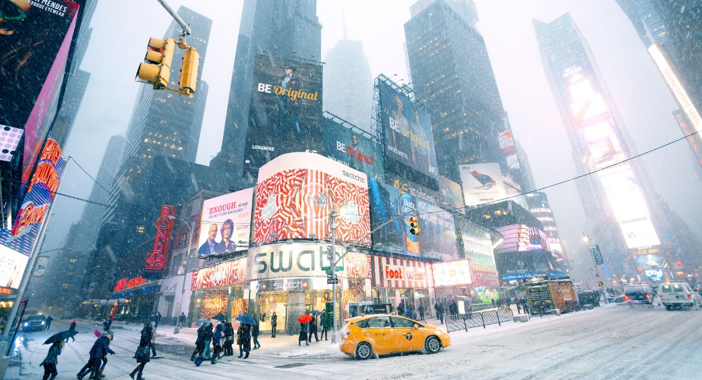

Encontrar lugares frios para viajar não é um problema, pois no Brasil e no mundo existem muitas opções. O principal é se organizar para ir na época certa e assim aproveitar melhor a sua viagem.
Para quem gosta de frio, o inverno é a melhor época do ano para viajar. Além de curtir as baixas temperaturas, você pode ver a neve dependendo do lugar do seu passeio.
Lugares frios para viajar: vantagens
Além de curtir as baixas temperaturas, viajar no inverno tem muitas vantagens, entre elas:
Baixa temporada: em alguns destinos o período de alta temporada é no verão. Por isso, se você viajar no inverno vai encontrar passagens e hotéis mais baratos. Além disso, os restaurantes e as atrações turísticas costumam ter preços melhores.
Cidade mais vazia: se viajar para um lugar onde é baixa temporada no inverno, com certeza vai encontrar a cidade mais vazia. Além de aproveitar melhor as atrações turísticas, você evita filas e tumultos.
Liquidação: quem vai à Europa no inverno pode aproveitar e curtir a liquidação de diversas lojas. Essa época é considerada por turistas e nativos como a melhor liquidação da Europa! Ótima oportunidade pra você garantir um casaco quentinho pelo menor preço.
Neve: Claro que não podia faltar a neve! Para muitos esse é o principal atrativo de viajar no inverno. Por isso, se você escolheu algum dos lugares frios para viajar, como Bariloche, por exemplo, se prepare para ver uma paisagem branquinha encantadora.
Dicas para aproveitar sua viagem em lugares frios
Antes de fazer as malas e sair por aí se aventurando em lugares frios é bom ter algumas orientações. Por isso, vamos te dar algumas dicas para você aproveitar ao máximo a sua viagem.
Prepare a sua mala: antes de viajar é bom saber o que levar na mala. Para evitar levar roupas desnecessárias e pagar excesso de bagagem, o ideal é pesquisar um pouco sobre o lugar que você está indo. Pesquise a temperatura média do período de viagem; para destinos com neve, leve casacos pesados, agora se for para um lugar menos frio, um moletom pode ser o ideal.
Leve protetor solar: pode parecer irônico levar protetor solar para um lugar frio. Mas apesar das baixas temperaturas o sol se mantém presente. Outra dica é levar protetor labial e cremes hidratantes. No frio, a pele costuma ficar muito ressecada e pode “rachar”, dando uma sensação incômoda.
Invista em calçados antiderrapantes: se você for para um lugar que tem neve pode encontrar o chão muito escorregadio. Para não correr o risco de cair e se machucar, o melhor é comprar um sapato antiderrapante.
5 ideias de destinos para suas viagens
1. Gramado, Rio Grande do Sul
Gramado é o principal destino da Serra Gaúcha para quem procura lugares frios para viajar. A cidade tem programação turística especial para quem a visita no inverno. Além disso, a arquitetura alemã chama atenção pela beleza.
E se você está programando uma viagem a dois, melhor ainda. O lugar é o destino ideal dos casais apaixonados, que podem curtir as baixas temperaturas tomando vinho e comendo fondue.
2. Campos do Jordão, São Paulo
Que tal dar um pulinho em Campos do Jordão? A cidade paulista é um dos lugares frios para viajar mais procurados no Brasil.
Conhecida como Suíça brasileira, o local atrai milhares de visitantes o ano todo que querem curtir o friozinho e conhecer os bares e restaurantes requintados, com o melhor da gastronomia brasileira e internacional.
3. Toronto, Canadá
Para quem está atrás de uma opção de lugares frios para viajar e anima ir para mais longe um pouquinho, Toronto pode ser uma boa opção. A cidade canadense é ideal para quem quer curtir a neve, patinação no gelo e estações de esqui.
Além disso, a gastronomia do local é outro atrativo. Entre os meses de janeiro e fevereiro (inverno na cidade), acontece o Winterlicious, festival gastronômico, com vários restaurantes a preços acessíveis.
Outra vantagem é que nessa época acontece a maior liquidação da cidade, com várias lojas participando. Oportunidade perfeita para você fazer as compras de viagem, não é mesmo?
4. Bariloche, Argentina
Bariloche é uma das opções preferidas dos brasileiros que buscam lugares frios para viajar para fora do país. A cidade é o destino perfeito para quem quer ver a neve, esquiar, andar de teleférico ou praticar esportes de inverno.
Lá também tem um centro comercial fortíssimo, ideal para quem não abre mão de fazer comprinhas de viagem.
Ah, e tem mais, como Bariloche fica na Argentina, nosso país vizinho que faz parte do Mercosul, para chegar até lá não é necessário passaporte, só um documento de identidade com foto. Gostou? Então não deixe de conhecer.
5. Nova York, Estados Unidos

Nova York, que tal? Quando pensamos em lugares frios para viajar automaticamente pensamos em Nova York. Uma das cidades mais cosmopolitas dos Estados Unidos, tem opção para todos os gostos e bolsos.
Lá você vai poder curtir a neve enquanto passeia no Central Park, patinar no gelo e fazer compras no mercado enquanto admira a decoração natalina. Ah, e você pode aproveitar o clima frio para passear nos lugares fechados, uma dica é curtir os museus da cidade. Não deixe de ir!
Agora é só compartilhar esse texto com a família e com os amigos, fazer as malas e boa viagem. Quer voar com tranquilidade? De Promo você pode!